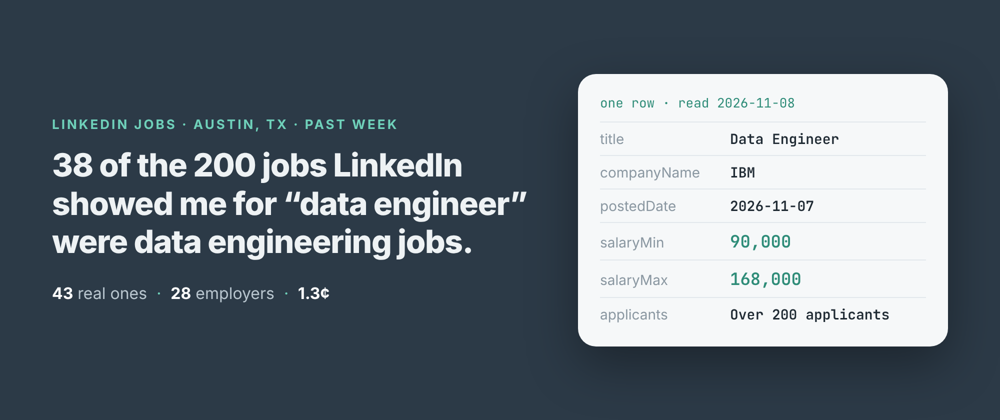
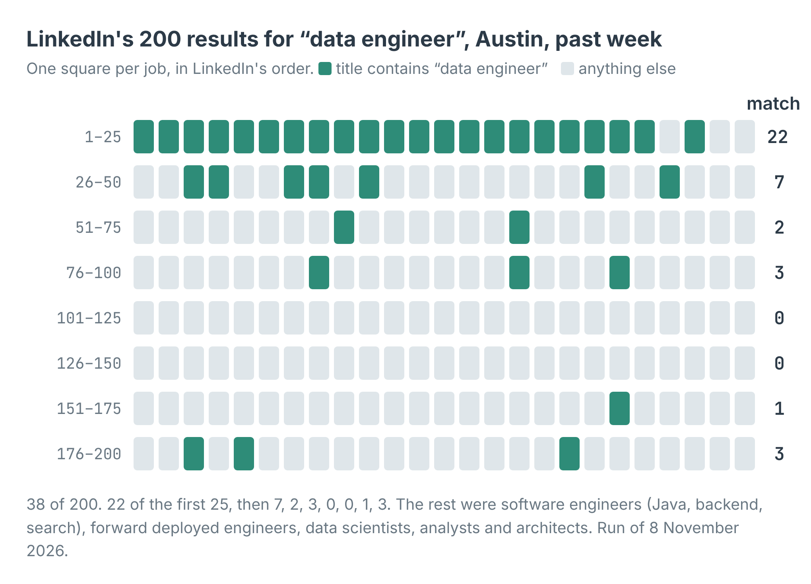
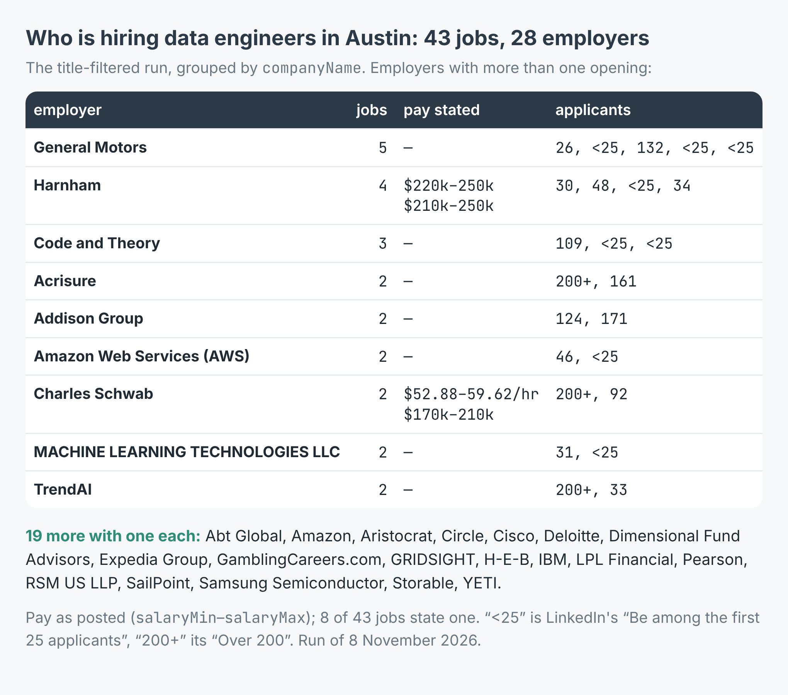

How to find which companies are hiring data engineers in Austin (28 employers from a week of LinkedIn jobs)
I wrote this with an AI assistant. The runs, numbers and code are real, and I checked them.

LinkedIn says there are 780 jobs for "data engineer" in Austin, Texas, posted in the past week. I asked for the first 200 of them. 38 had "data engineer" in the title.
The other 162 were Java developers, search backend engineers, data scientists, Power BI developers, SAS developers, a strategy and operations generalist and sixteen forward deployed engineers. LinkedIn's job search matches loosely, and it gets looser the further down you go.
If the question is "which companies in Austin are hiring data engineers right now", that matters. A list of 200 employers would be mostly wrong. Here's how I got the right list, and what it showed.
200 jobs, 38 data engineers
I build and run a LinkedIn jobs scraper on Apify. It reads what LinkedIn shows a visitor who isn't signed in: the job search, its pages, and each job's full posting. No login, no cookies, no key. Each job comes back as one row with the title, the company, the posted date, the applicant count, and the salary when the posting states one.
Early on 8 November I ran it with the keyword "data engineer", the place "Austin, Texas, United States", postedWithin set to "1 week" and maxJobs at 200. It took 5 minutes 22 seconds and returned 200 rows from 123 companies, posted between 1 and 7 November.

The first page is mostly right. After the first 50, only 9 jobs in 150 are data engineering jobs.
LinkedIn ranks the close matches first. 22 of the first 25 titles contained "data engineer". Among the 101st to the 150th there were none. A search that looks right on the first screen is mostly something else by the fourth.
Filter the titles before you pay for them
The scraper has a titleMustInclude list. A job whose title contains none of its words is dropped before its posting is read, and isn't charged. So I ran the same search again with that one change:
import { ApifyClient } from 'apify-client';
const client = new ApifyClient({ token: process.env.APIFY_TOKEN });
const run = await client.actor('simple.actor/linkedin-jobs').call({
keywords: ['data engineer'],
locations: ['Austin, Texas, United States'],
postedWithin: '1 week', maxJobs: 200,
titleMustInclude: ['data engineer', 'data engineering'],
});
const { items } = await client.dataset(run.defaultDatasetId)
.listItems();
for (const j of items) console.log(j.companyName, '|', j.title);
It took 2 minutes 18 seconds and returned 43 jobs, every one with data engineering in the title. It went deeper into LinkedIn's list than my first run did: the last match was at position 248. All 38 from the first run were there, plus 5 more, among them a Senior Data Engineering Team Manager at Charles Schwab at position 235.
Fewer rows, faster, and a fifth of the price. It's the setting I'd start with every time.
Who is hiring
The 43 jobs came from 28 employers. Nine posted more than one.

General Motors posted five data engineering jobs in Austin in one week. Pay was stated on 8 of the 43.
General Motors leads with five, from Senior Data Engineer to AI Data Engineering Manager. Three of the five had fewer than 25 applicants when I read them. Harnham has four, all with pay stated between $210,000 and $250,000 a year. Code and Theory has three, two of them under 25 applicants.
The applicant counts split in two. 22 of the 43 jobs had fewer than 50 applicants, counting the 10 where LinkedIn says "Be among the first 25 applicants". 10 had over 200. The IBM, Expedia, Acrisure and Dimensional Fund Advisors postings were all past 200 within the week.
Only 8 of the 43 stated pay. IBM's Data Engineer was $90,000 to $168,000 a year, Expedia's Data Engineer III $146,000 to $204,500. Charles Schwab's Data Engineer was the one hourly figure, $52.88 to $59.62. The scraper turns each into salaryMin, salaryMax, salaryCurrency and salaryPeriod, so you can sort on them. The other 35 rows carry nulls there.
What it cost
The scraper charges $0.0003 per job delivered, plus $0.00005 when a run starts. The first run delivered 200 jobs, so a caller would pay $0.06005, about 6 cents. The filtered run delivered 43, so $0.01295, about 1.3 cents. The jobs it dropped by title were never read or charged.
A thousand jobs costs $0.30. For a weekly check, set postedWithin to "1 week" and pass the job ids you already hold as skipJobIds, and each run reads only what's new.
What a job row won't tell you
LinkedIn files Harnham under Staffing and Recruiting: it's a recruiter. Three of its four rows are titled "Principal Data Engineer", posted on 2 and 4 November, each with its own job id and a pay band of $210,000 or $220,000 to $250,000. That could be three openings or one opening posted three times; the rows can't say. And its Senior Data Engineer posting starts "I'm partnering with a well-known technology company", without naming it. For lead generation, the company in the row is the one that posted, not always the one that's hiring. Even that label wobbles: one of Harnham's four rows came back filed under "Real Estate".
seniorityLevel is "Not Applicable" on 35 of the 43. The title says more than that field does.
The numbers move. LinkedIn counted 780 jobs on the first read and 800 on the second, six minutes apart. In the first run, one job's description came back rate_limited after four tries; it was still delivered with the list's fields and charged as a job. When I tried the example script on "analytics engineer" in Denver, one page of LinkedIn's list hit the challenge page on every attempt. The run delivered the 6 jobs it had and added an error row saying which page it couldn't read. Error rows are never charged.
A salary is only as good as the posting. One job in the first run, an IDMC Administration Lead, read "$45.00/yr - $50.00/yr", and the scraper dutifully reported salaryPeriod: "year". That's almost certainly an hourly rate. Sanity-check anything under a few thousand a year.
And it's public postings only. LinkedIn caps any search at 1,000 jobs and hides a few things from visitors who aren't signed in, including whether a job is remote and the employer's own apply link. applyType does say whether a job applies on LinkedIn or on the employer's site: 38 of the 43 went to the employer's site.
Make it your role and your town
The example repo, linkedin-jobs-scraper, takes a role and a place, filters titles the same way, prints every employer with its openings, pay and applicants, and writes all the jobs to jobs.csv, in Node and in Python. Swap "data engineer" and Austin for the job you hire for or sell to: nurses in Phoenix, electricians in Leeds, account executives in Toronto. Put the role's own words in titleMustInclude, keep postedWithin to a week, and read the company column with a recruiter in mind. The scraper is at apify.com/simple.actor/linkedin-jobs.